11 Session 11: Sequences, Language Models and SignalP
Sources for this page: d2l.ai, Dive into Deep Learning, Recurrent Neural Networks, Modern Recurrent Neural Networks and Attention Mechanisms and Transformers — CC BY-SA 4.0. The history of SignalP follows Nielsen, Teufel, Brunak & von Heijne (2024), “SignalP: The Evolution of a Web Server”, Methods Mol Biol 2836:331-367, a history written by the SignalP authors themselves (copyrighted; its findings are described and cited here, and its figures are not reproduced). Every other historical number is taken from the primary paper, cited where it is used. Data: 4,910 reviewed UniProt entries (CC BY 4.0), a copy of which is kept in the course repository; the pretrained ESM-2 model (Lin et al. 2023) via fair-esm. 3Blue1Brown’s videos on language models, Transformers and attention are embedded as further watching. The recurrent-network and attention material follows ideas from Magnus Ekman’s Learning Deep Learning (ch. 9-12 slide decks and notebooks), a copyrighted, not openly licensed textbook, credited here as an internal source and not linked. Every number from our own code was read back from the notebook’s output.
Notebook: Session 11 — Sequences, language models and SignalP, in code — the code behind this page. Download it to run it yourself.
11.1 Learning goals
By the end of this session you should be able to:
- explain how a recurrent network carries context along a sequence, why its gradients can vanish or explode, and what the LSTM’s additive memory path changes;
- explain, for residue-level signal-peptide annotation, why a bidirectional LSTM beats a forward-only one, and when a bidirectional model is impossible;
- explain what a language model learns without labels, the difference between masked (BERT-style) and next-token (GPT-style) models, and how attention lets every position consult every other;
- explain what a contextual embedding is, and why the same amino acid gets different vectors in different proteins;
- explain, from the classroom version of SignalP 6.0’s idea, why pretrained protein-language-model embeddings help most when labelled proteins are scarce.
The whole session answers two questions:
- How can a model use context from the rest of a biological sequence?
- How can we learn useful biological representations when labels are scarce but unlabelled sequences are abundant?
Session 10’s CNNs share local detectors and widen their receptive field with depth. But what if residue 10 needs information from residue 200? There are three ways to bring in such context, and this session covers the last two:
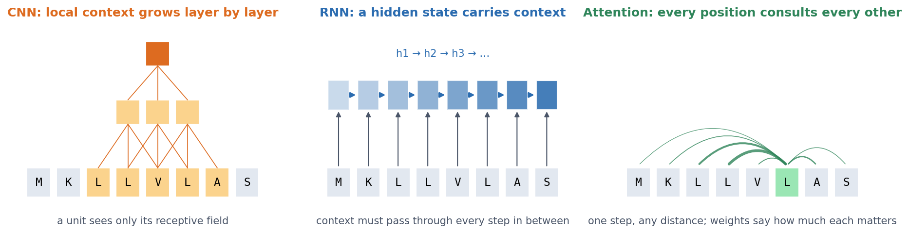
11.2 How can a model remember sequence context?
11.2.2 LSTM: an additive memory path
The Long Short-Term Memory network (Hochreiter & Schmidhuber, 1997, Neural Computation 9:1735) was designed to solve this problem. It adds a separate memory, the cell state, which is updated by adding to it rather than by recomputing it. Small sigmoid gates decide what to keep, what to add and what to expose. Because the memory is carried forward by addition, the error signal can flow back over many steps without shrinking at every one, as long as the forget gates stay close to 1 (it still shrinks where they close). This mitigates the vanishing gradient; it does not abolish it. LSTMs therefore make much longer dependencies trainable than a simple RNN can, although how long in practice depends on the task. The notebook writes the gate equations out and checks them against PyTorch’s nn.LSTMCell. A GRU is a later, simpler gated recurrent network, with fewer gates and no separate cell state.
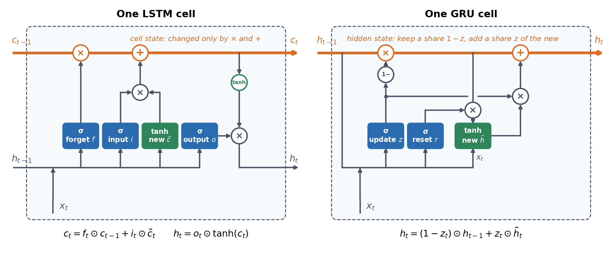
An LSTM that reads from left to right still knows only what came before each position. A bidirectional LSTM (Schuster & Paliwal, 1997) removes this limitation. It runs one LSTM from left to right and another from right to left, and it combines them at every position, so each position also sees what comes after it.
11.2.3 Case study: which residues belong to a signal peptide?
A good test case for these models is the signal peptide. Signal peptides are short N-terminal sequences that send a protein into the secretory pathway, a discovery for which Günter Blobel received the 1999 Nobel Prize. They have three regions: a positively charged n-region, a hydrophobic h-region, and a polar c-region that ends at the cleavage site. Our dataset has 4,910 reviewed UniProt proteins from eukaryotes and bacteria, in three groups:
- 1,936 proteins with an experimentally supported signal peptide (ECO:0000269). Many UniProt signal peptides are predicted by SignalP itself, and training on those would teach a model to imitate SignalP.
- 1,988 cytoplasmic or nuclear proteins.
- 986 transmembrane proteins. These are hard negatives, because a transmembrane helix is also a hydrophobic stretch.
The regions show up when the experimentally supported signal peptides are aligned on their cleavage site:
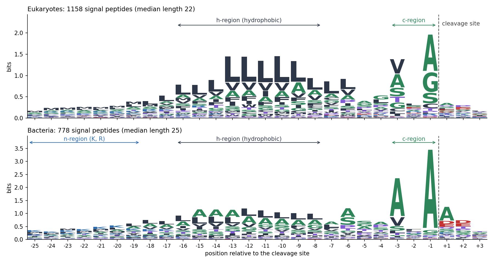
The split is homology-aware (Session 8). The proteins fall into 3,205 MMseqs2 clusters at 30% identity, which are divided into 3,432 training, 737 validation and 741 test proteins. Each of the first 70 residues is labelled as signal peptide or not:
| Sliding window (15 residues) + linear classifier | Simple RNN | LSTM | Bidirectional LSTM | |
|---|---|---|---|---|
| Weights | — | 4,105 | 14,761 | 29,017 |
| MCC | 0.539 | 0.620 | 0.631 | 0.820 |
| AUPR | 0.681 | 0.770 | 0.767 | 0.920 |
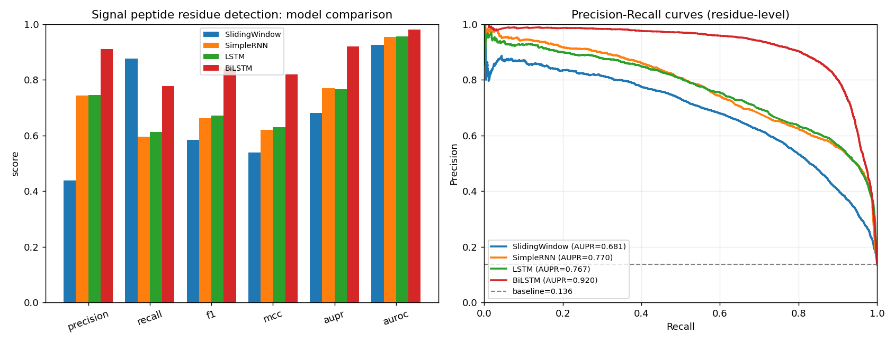
Why does reading both directions help so much? Think of residue 3, in the n-region. When a forward LSTM labels it, it has seen only “M-x-x”, and nothing yet of the hydrophobic h-region that identifies a signal peptide. Whether residue 3 belongs to a signal peptide is decided by what comes after it. The first discussion problem measures this effect. The forward LSTM mislabels 76% of the first five residues of signal peptides, and the bidirectional one only 12%. Near the cleavage site, in contrast, both err about equally often (0.20 and 0.23). The forward model also labels the N-terminus of many proteins without a signal peptide as part of one, because it cannot yet see that no h-region follows.
SignalP 5.0 (2019) was built from these parts. It is a deep network with a bidirectional LSTM and, on top, a conditional random field (CRF). The CRF is a structured output layer that favours biologically plausible label sequences, for example a signal peptide that starts at residue 1 and does not stop and restart.
11.2.3.1 Further reading
- d2l.ai, Modern Recurrent Neural Networks (LSTM, GRU, bidirectional RNNs)
- Wikipedia, Long short-term memory
11.3 Can we learn from sequences without labels?
So far every model has needed labels, such as residues marked as signal peptide by experiment. Labels are expensive, but sequence databases hold hundreds of millions of unlabelled proteins (Session 3). Can a model learn useful biology from the sequences alone?
11.3.1 What a language model is
You have almost certainly used a language model already: the word suggestions on a phone keyboard, and ChatGPT. Both rest on one simple task, given the text so far, predict what comes next. After “The mitochondrion is the powerhouse of the”, a good model puts most of its probability on “cell”, a little on “eukaryotic”, and almost none on “bicycle”.
A language model is a model that does this: for any sequence of tokens (words, pieces of words, or for proteins amino acids), it gives a probability for every token that could come next. It is called a language model because it models which sequences are likely in a language, and which are not.
How ChatGPT writes. GPT stands for Generative Pre-trained Transformer: generative because it can produce text, pre-trained because it first learns from a huge amount of unlabelled text, and Transformer after the architecture explained below (Section 11.3.3). To write an answer, the model predicts a probability for every possible next token, picks one of the likely ones, adds it to the text, and repeats, one token at a time. Everything ChatGPT writes is produced this way. ChatGPT itself (OpenAI, November 2022) is a GPT model that, after pretraining on text from the internet and books, was further trained on example conversations and on human ratings of its answers, so that it follows instructions and answers like an assistant instead of simply continuing the text. Its predecessor GPT-3 (2020) already had 175 billion weights, trained on about 300 billion tokens.
Why predicting the next token teaches so much. The task sounds trivial, but to do it well a model has to learn a great deal. To continue “The capital of Sweden is”, it must know a fact. To continue a sentence in correct grammar, it must know the grammar. To continue an argument, it must follow the argument. None of this is taught directly: it is whatever helps the prediction. The same holds for proteins. To predict a hidden residue in a signal peptide, a model has to learn that the middle of a signal peptide is hydrophobic; to predict a residue in the core of a fold, it has to learn which residues pack against each other.
No labels needed. The training data provide their own answers, because the next token is simply the next token in the text. Training of this kind is called self-supervised: the training signal is a prediction task, as in supervised learning (Session 8), but the labels come from the sequences themselves, so any amount of unlabelled text, or any number of protein sequences, can be used.
Language models come in two kinds:
- autoregressive (GPT-style) models predict the next token from the previous ones;
- masked (BERT-style) models, including protein models such as ESM-2, hide some tokens and predict them from the context on both sides.
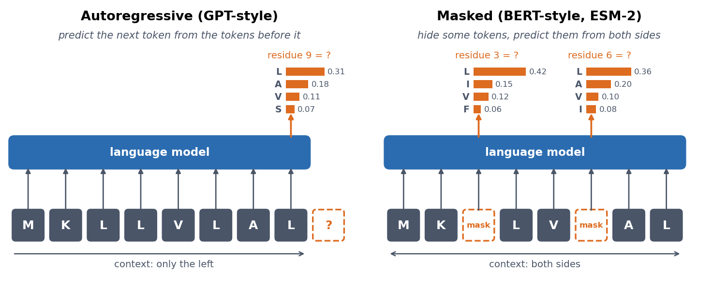
To predict well, a model must learn what tends to go with what. These learned regularities are stored in its internal vectors (embeddings), and they turn out to be useful for many other tasks. The rest of this session uses that idea on proteins (Table 11.2).
| Language models of text | Protein language models | |
|---|---|---|
| Token | a word or piece of a word | an amino acid |
| Vocabulary | tens of thousands of tokens | 20 amino acids (and a few special tokens) |
| Training data | text from the internet and books | protein sequences from UniProt (Session 3) |
| Training task | GPT: the next token; BERT: masked tokens | mostly masked residues (ESM-2, ProtBERT) |
| What it learns without being told | grammar, facts, style | biochemistry, structure, evolutionary constraints |
| Example | GPT, ChatGPT, BERT | ESM-2, ProtBERT (used by SignalP 6.0) |
A tiny one, in the notebook. How good a language model is can be measured in bits per token, the surprise of Session 1 averaged over test data. Guessing uniformly among 20 amino acids costs \(\log_2 20 = 4.322\) bits per residue. Knowing only how common each amino acid is brings this down to 4.164 bits. An LSTM trained to predict the next residue reaches 4.071 bits on the test proteins, only a little better. Large models get much further, with far more data and a better architecture.
11.3.1.1 Further watching
Large Language Models explained briefly (3Blue1Brown): a short overview of what a language model is and how it is trained:
11.3.2 Attention, from scratch
The better architecture is built on attention. For every position, self-attention asks: which other positions should I take information from? For residue i it:
- compares residue i with every residue j;
- gives each j a relevance score;
- normalises the scores so that they sum to 1 (softmax);
- updates residue i with a weighted average of what the other residues contribute.
To do this, each residue’s vector is turned into three vectors by learned linear maps: a query (what am I looking for?), a key (what do I contain?) and a value (what do I pass on?). The score of j for i is the match between the query of i and the key of j. In matrix form, for all positions at once:
\[ \text{Attention}(Q, K, V) = \text{softmax}\!\left(\frac{QK^\top}{\sqrt{d_k}}\right) V \]
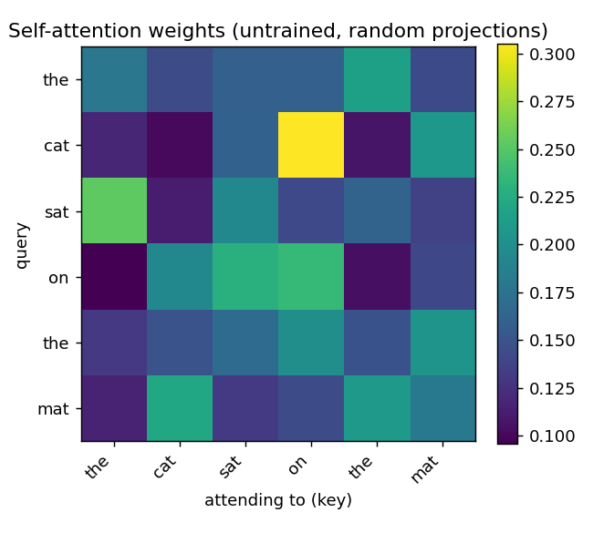
Unlike an RNN, attention connects any two positions in one step, however far apart they are, and it computes all positions at once. Two cautions apply. First, a high attention weight means that residue j contributes strongly when residue i is updated. It does not prove a 3D contact, and it is not by itself a biological explanation (the second discussion problem tests how much structural signal attention maps actually carry). Second, attention by itself has no idea of order, so “ACDE” and “EDCA” give the same set of outputs, just shuffled. The Transformer adds the order back.
11.3.2.1 Further watching
Attention in transformers, step-by-step (3Blue1Brown, Deep Learning ch. 6): queries, keys, values, multiple heads and the causal mask, animated:
Going further: How might LLMs store facts (3Blue1Brown, Deep Learning ch. 7), about the feed-forward layers inside a Transformer.
11.3.3 The Transformer: attention plus four tricks
Attention alone is not yet a complete model. A Transformer (Vaswani et al. 2017) is a stack of identical blocks. Each block takes one vector per token and returns one vector per token of the same size, so blocks can be stacked as deep as the budget allows.
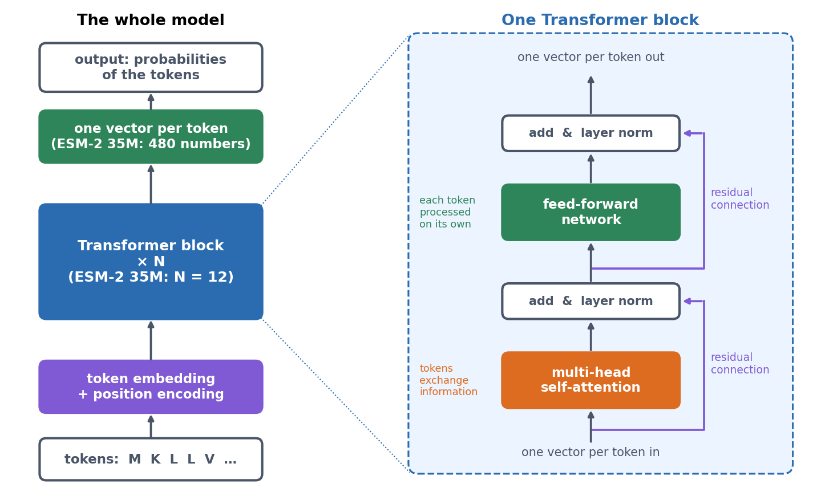
Besides self-attention, a block uses four tricks, most of which you have met before:
- Several heads. Several attentions run side by side (20 in ESM-2 35M), and each is free to follow a different relationship.
- A feed-forward network (Session 7’s MLP) is applied to every token on its own. Attention moves information between tokens, and the feed-forward network processes it within each token.
- Residual connections and layer normalisation. Each step adds its output to its input (Session 10’s ResNet idea), so gradients survive dozens of blocks.
- Position encoding. Information about the position of each token is added before or inside the attention. Without it, “ACDE” and “EDCA” would look the same, and a protein model would not know which residue comes first.
The notebook’s ESM-2 has 12 blocks and 480 numbers per residue (33.5 million weights), while the largest ESM-2 has 48 blocks and 15 billion weights.
BERT vs. GPT is one mask, and it is the same distinction as between a forward and a bidirectional LSTM. A BERT-style encoder lets every position attend to every other position and learns by filling in masked tokens. This is fine when the whole sequence is known, as in annotation. A GPT-style decoder masks out the future, so each position sees only earlier ones and learns by predicting the next token. This is what lets it generate sequences:
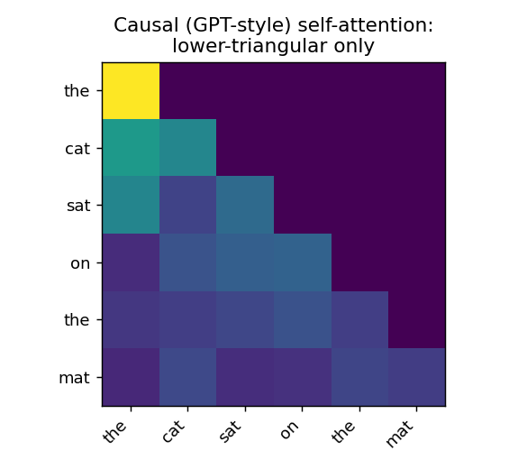
Protein language models such as ESM-2 are encoders, trained BERT-style, so every residue sees the whole sequence.
11.3.3.1 Further watching
Transformers, the tech behind LLMs (3Blue1Brown, Deep Learning ch. 5): how a GPT-style model turns tokens into vectors and predicts the next token:
11.3.4 What actually happened
These pieces arrived in a particular order. Language models started by counting which word follows which (n-grams) and then moved to recurrent networks and LSTMs that learned word vectors. Attention (Bahdanau, Cho & Bengio 2014, arXiv:1409.0473) was first added to recurrent translation models. The Transformer (Vaswani et al. 2017, arXiv:1706.03762) then kept only the attention and could process all positions in parallel. This made large-scale pretraining practical: a model is trained once on huge amounts of unlabelled text and then adapted to many tasks. The two branches are GPT (Radford et al. 2018, paper; next-token, causal) and BERT (Devlin et al. 2018, arXiv:1810.04805; masked, bidirectional). Scaled up, the GPT branch became today’s large language models.
11.3.5 Protein language models
The same recipe works for proteins. There are hundreds of millions of unlabelled sequences, and a model that learns to fill in missing residues has to learn something about structure, function and evolution. Protein language models developed in three steps:
- An early precursor. SignalP’s authors note that the network program their group used before SignalP could erase the central residue of a window and predict it. This was “presumably … the first machine learning language model” in biological sequence analysis (Nielsen et al. 2024, Methods Mol. Biol. 2836:331).
- Recurrent protein language models (2019), such as UniRep and SeqVec, learned embeddings from tens of millions of unlabelled sequences.
- Transformer protein language models (2021 onwards) then took over. They include ProtBERT (Elnaggar et al. 2022, IEEE TPAMI 44:7112), the model inside SignalP 6.0, and the ESM family. This session uses ESM-2 (Lin et al. 2023, Science 379:1123; 8 million to 15 billion weights, masked language modelling). The attention maps of these models turned out to contain information about residue contacts, although they were never trained on structures (Rao et al. 2021, ICLR). The largest ESM-2 models even predict 3D structure from a single sequence (ESMFold), which is the bridge to Session 12.
The model knows what a signal peptide looks like. In the notebook, ESM-2 (35M parameters) is given a real secreted protein in which residue 11, inside the hydrophobic h-region, is masked. It predicts leucine with probability 0.41, followed by A, V and G, and the true residue is indeed L. At the same position in a cytoplasmic protein, in contrast, its guesses are spread out, with no residue above 0.11. Nobody told the model about signal peptides.
11.3.6 Same residue, different context: contextual embeddings
In a one-hot encoding (Sessions 7-10), every leucine is the same vector, wherever it occurs. (You have met one learned representation before: in Session 6, Foldseek turned the 3D environment of each residue into a letter of a learned 3Di alphabet.) A protein language model instead computes the vector of each residue from the whole sequence around it. This is a contextual embedding, and with it a leucine in a signal peptide and a leucine in a cytoplasmic enzyme get different vectors. To see this, the notebook collects the ESM-2 vectors of 2,924 leucines from the first 70 residues of 450 proteins, counting only the leucines inside the signal peptide in the secreted group:
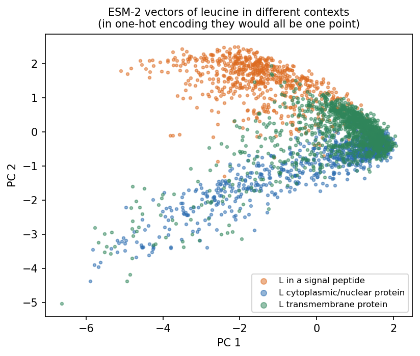
In one-hot encoding, every pair of these leucines has cosine similarity 1. In ESM-2, leucines inside signal peptides have a mean cosine similarity of 0.745 with each other, but only 0.633 with leucines in cytoplasmic proteins, so the vector carries information about the surroundings of the residue. This is what a classifier on top of a protein language model gets to work with, and it is probably the single most important idea of this part.
11.3.7 Foundation models: pretrain once, reuse everywhere
ESM-2 is a foundation model (Bommasani et al. 2021, arXiv:2108.07258). Such a model is trained once on huge unlabelled data and then reused for many tasks, in three steps:
- Pretrain on everything available, with no labels (UniRef for proteins, the internet for text, billions of photos for images).
- Represent each new example by the model’s embedding.
- Adapt with a small amount of labelled data, either by training a small model on top of the frozen embeddings or by fine-tuning the whole network a little.
You have met this recipe three times: DINOv2 on histology tiles (Session 10), ESM-2 here, and SignalP 6.0 below, which is ProtBERT plus a small model on top. A foundation model helps most when labelled data are scarce, but it does not remove the need for an honest split.
11.3.7.1 Further reading
- d2l.ai, Attention Mechanisms and Transformers
- Vaswani et al. (2017), Attention Is All You Need
- Devlin et al. (2018), BERT
- Lin et al. (2023), Evolutionary-scale prediction of atomic-level protein structure with a language model
11.4 Pretraining changes biological prediction
11.4.1 SignalP: thirty years in three steps
SignalP has been online since 1995, is one of the most used tools in bioinformatics, and runs through this whole course. Its history shows each of the model types we have met:
| Versions | Model |
|---|---|
| SignalP 1-4 (1997-2011) | feed-forward networks on sliding windows (Session 7), combined with hidden Markov models (Session 5) in versions 2-3 |
| SignalP 5.0 (2019) | a deep recurrent network: bidirectional LSTM + CRF (above) |
| SignalP 6.0 (2022) | the pretrained protein language model ProtBERT + CRF |
(Nielsen et al., Protein Eng 10:1; Almagro Armenteros et al., Nat Biotechnol 37:420; Teufel et al., Nat Biotechnol 40:1023; history by the authors themselves in Nielsen et al. 2024, Methods Mol. Biol. 2836:331.)
What changed when a representation pretrained on huge unlabelled protein collections became available? The SignalP 6.0 paper reports four changes:
- Few-shot learning. Two signal-peptide types had almost no training data (36 and 113 sequences). With ProtBERT, both became predictable for the first time, which “confirms the importance of LMs for low-data problems”.
- Better generalisation. The two versions were equal on close homologs of the training data, but “at sequence identities lower than 60%, SignalP 6.0 outperforms SignalP 5.0”.
- No organism input needed. The language model infers the taxonomic context from the sequence itself, so SignalP 6.0 also works on metagenomic proteins of unknown origin.
- Homology partitioning, again. For SignalP 6.0, the authors found that their earlier partitioning had left similar sequences on both sides. They built a new tool (GraphPart; Teufel et al. 2023, NAR Genom Bioinform 5:lqad088), and even with it they could not get below 30% identity between folds. This is Session 8’s lesson, learned the hard way.
11.4.2 Reproducing the idea at classroom scale
Can we see the same effects ourselves? We use a simpler task, does this protein have a signal peptide?, on the same 4,910 proteins and their first 70 residues. We compare three classifiers:
- one-hot encoding with logistic regression;
- one-hot encoding with a small 1D CNN (Session 10);
- logistic regression on the frozen ESM-2 embedding (35M parameters, a stand-in for the larger ProtBERT), with the residue vectors averaged into 480 numbers.
On the homology-aware test set (741 proteins, used once):
| One-hot + logistic regression | One-hot + 1D CNN | ESM-2 embedding + logistic regression | |
|---|---|---|---|
| MCC | 0.745 | 0.825 | 0.955 |
| Accuracy | 0.879 | 0.916 | 0.978 |
Few-shot. To mimic scarce labels, we train on random subsets of the training proteins:
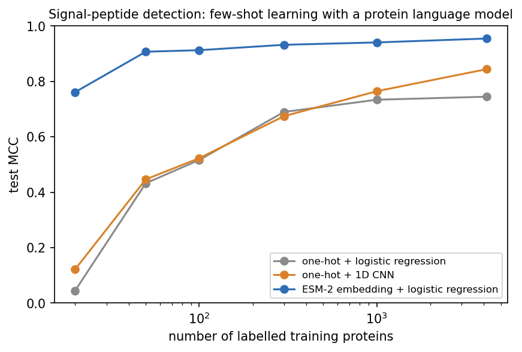
With only 50 labelled proteins, the ESM-2 classifier (MCC 0.907) already beats both one-hot models trained on all 4,169 (0.745 and 0.845). This is the central result of the session: pretraining transfers information learned from millions of unlabelled sequences into a task where labelled examples are scarce. The language model has already learned most of what distinguishes a signal peptide, and the labels only need to point at it.
Generalisation. SignalP 6.0’s authors compared performance on test proteins at different identities to the training set. To see the whole range of identities, we use a plain random 80/20 split and measure the identity of each test protein to its most similar training protein with MMseqs2. This is a diagnostic that shows why random splits can be deceptively easy, not an argument for using them. The homology-aware result above remains the honest estimate for new protein families (Session 8).
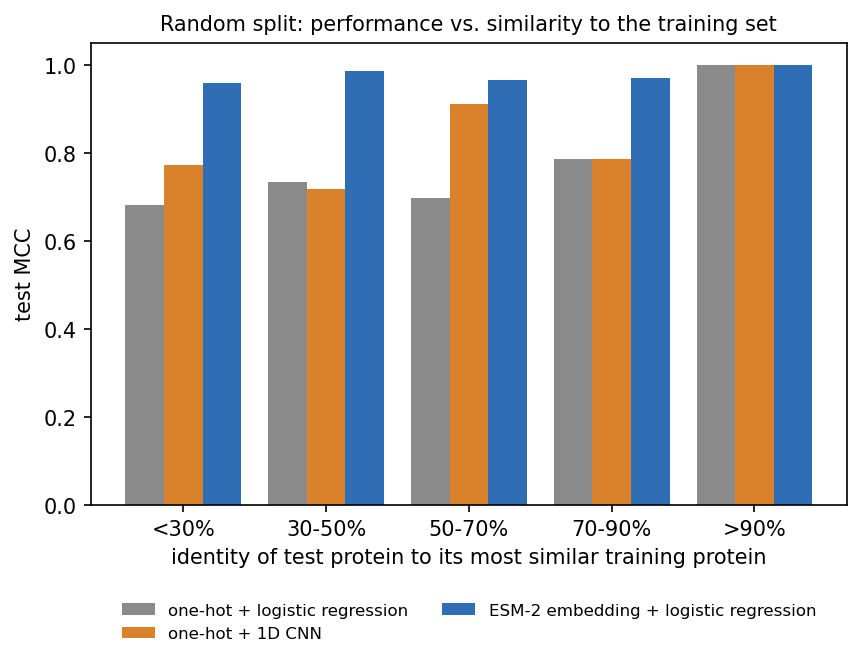
Close homologs (>90% identity) are predicted perfectly by all three classifiers. Without a close homolog (<30%), however, the one-hot classifiers drop to MCC 0.681 and 0.773, while the ESM-2 classifier stays at 0.960. This is the same pattern that SignalP 6.0’s authors found. (Our task is easier than SignalP’s, and our model is smaller and not fine-tuned. ESM-2 has seen these sequences during pretraining, but never their labels, which is also true of ProtBERT inside SignalP 6.0.)
11.4.2.1 Further reading
- Teufel et al. (2022), SignalP 6.0 predicts all five types of signal peptides using protein language models (open access)
- Teufel et al. (2023), GraphPart: homology partitioning for biological sequence analysis
- SignalP 6.0 web server
11.5 Check your understanding
11.6 The course notebook
notebooks/session11-rnns-lstm-gru-in-code.ipynb computes every number on this page:
- Vanishing and exploding gradients through time, an LSTM cell written out by hand, and residue labelling with a sliding window, a simple RNN, an LSTM and a bidirectional LSTM on the homology-aware split.
- A next-residue LSTM language model, self-attention and the causal mask from scratch, ESM-2 filling in a masked residue, and the contextual embeddings of leucine.
- One-hot vs. frozen ESM-2 embeddings: the homology-aware test, the few-shot curve, performance vs. identity, and the PCA.
The dataset is loaded from the course repository. On Colab, run !pip install fair-esm first. Everything runs on a CPU in a few minutes. Open the notebook in Google Colab.
11.7 The lab
Full lab: the lab is adapted from the previous course’s “Neural Networks” labs and rebuilt in PyTorch on biological data. Work through notebooks/session11-lab.ipynb, replacing every todo(...) call with your own code:
- label signal-peptide residues with a feed-forward sliding window of 1, 11 and 41 residues, and see how the window size matters;
- build a forward and a bidirectional LSTM tagger for the same task, and explain why reading the sequence in both directions helps;
- compute ESM-2 embeddings and cosine similarities for two myoglobins and an unrelated membrane transporter;
- embed eleven PDB proteins, plot them with PCA, cluster them, and check the clusters against their Pfam families.
An optional extra at the end of the notebook, not part of the quiz, lets you write one step of a simple RNN by hand and check it against nn.RNN.
11.7.1 Submitting this lab
This lab is administered through Canvas, not through this book. See the course’s Canvas page for the current quiz, the deadline and how to submit.
11.8 What’s next
This session has shown three ways to use context. A CNN widens local context layer by layer, an RNN carries context step by step, and attention lets any position use any other directly. It has also shown two ways to learn a representation. A supervised model learns it from task labels, while a protein language model learns it first, from millions of unlabelled sequences, so that a few labels go a long way.
Session 12 is about AlphaFold and its relatives. They use attention over multiple sequence alignments and over residue pairs to predict 3D structure, and protein language models such as ESM-2 can do the same from a single sequence. Along the way, Session 10’s contact maps become distances, and then coordinates.